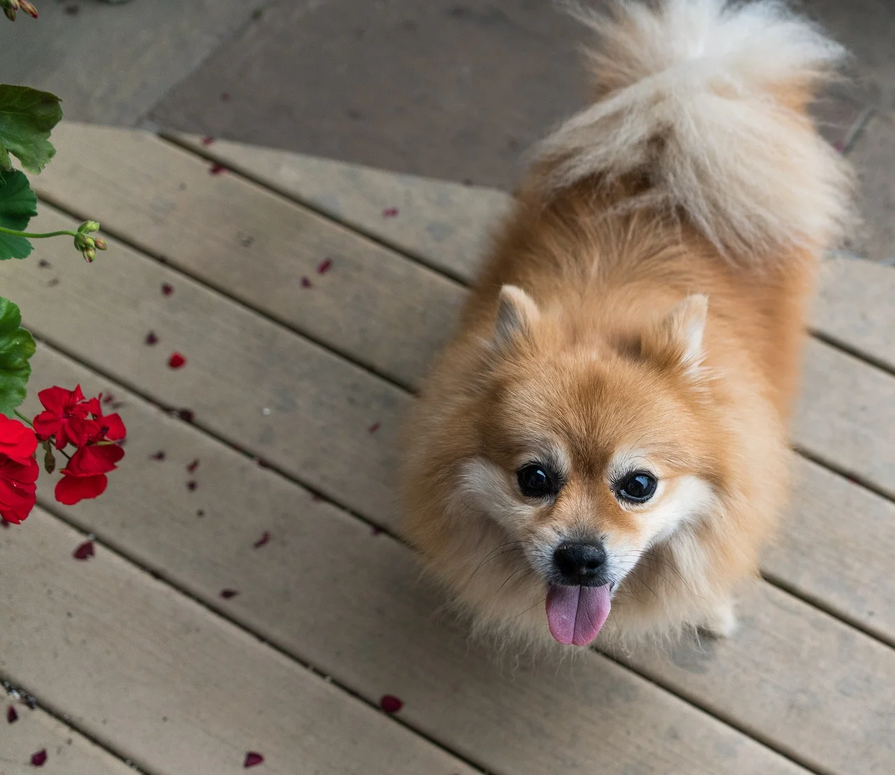

<section class="page__tips tips">
    <div class="tips__container _container">
        <h2 class="tips__title _title">Tips & Tricks</h2>
        <div class="tips__slider slider-tips">
            <div class="slider-tips__body _swiper">
                <div class="slider-tips__slide">
                    <a href="" class="slider-tips__image _ibg">
                        
                    </a>
                    <div class="slider-tips__content">
                        <a href="" class="slider-tips__title">
                            Bathing is not just washing away dirt, but a full-fledged care for wool</a>
                        <div class="slider-tips__text">2 sep 2021</div>
                    </div>
                </div>
                <div class="slider-tips__slide">
                    <a href="" class="slider-tips__image _ibg">
                        
                    </a>
                    <div class="slider-tips__content">
                        <a href="" class="slider-tips__title">Haircut is probably the best manifestation of groomer's skill</a>
                        <div class="slider-tips__text">10 juli 2021</div>
                    </div>
                </div>
                <div class="slider-tips__slide">
                    <a href="" class="slider-tips__image _ibg">
                        
                    </a>
                    <div class="slider-tips__content">
                        <a href="" class="slider-tips__title">Trimming is a procedure that is often called manual molting.</a>
                        <div class="slider-tips__text">2 aug 2021</div>
                    </div>
                </div>
            </div>
            <div class="slider-tips__dotts"></div>
            <div class="slider-tips__arrows slider-arrows">
                <button type="button" class="slider-arrow slider-arrow_white slider-arrow_prev _icon-arrow-down"></button>
                <button type="button" class="slider-arrow slider-arrow_white slider-arrow_next _icon-arrow-down"></button>
            </div>
        </div>
    </div>
</section>